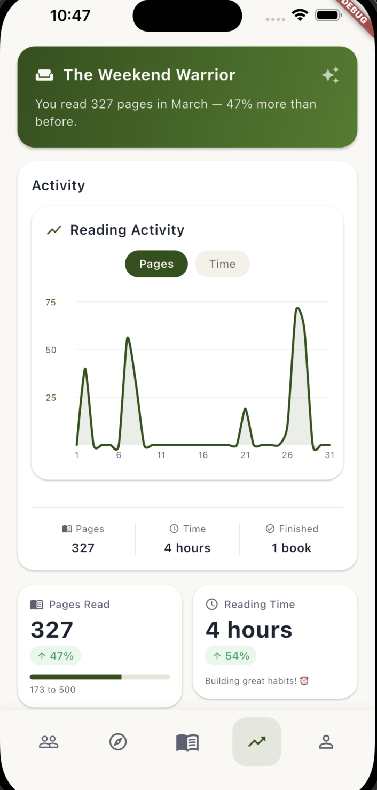

Wovyn
A mobile reading platform — track sessions, discover books through a personalized ranked feed, and watch the habit build. Two-person production system: iOS and Android client, Firebase backend, scheduled recommendation jobs, and release pipeline. I led the architecture and wrote roughly 60% of the commits.
- ~45k lines of Dart across 33 feature modules and 24 Cloud Functions
- Feed ranked on eight bounded signals, then re-blended for diversity
- Reading sessions survive a cold kill — wall-clock timer, iOS Live Activity
- Offline-safe writes: client-generated document ids, deduped triggers
- Strict MVVM where nothing below the UI layer throws
In TestFlight beta with 30+ testers. The Flutter app is a private commercial repo; the public one is the marketing site.